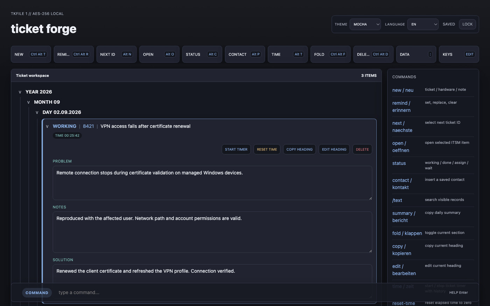

Ticket Forge
A browser-based workspace for IT tickets with status flows, search, contacts, reminders and integrated time tracking.
Privacy by design: AES-256 local storage and encrypted backup import/export keep ticket data client-side.
View project